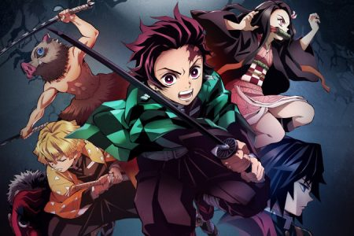

Sobre Demon Slayer
Ambientada en la Era Taisho, Tanjiro Kamado es un niño inteligente y de buen corazón que vive con su familia en las montañas. Se ha convertido en la única fuente de ingresos de su familia tras el fallecimiento de su padre, haciendo viajes al pueblo cercano para vender carbón y vegetales. Todo cambia cuando llega a casa un día y descubre que su familia ha sido atacada y asesinada por un demonio. Tanjiro y su hermana Nezuko son los únicos supervivientes del incidente, con Nezuko transformada en un demonio, pero todavía mostrando signos de emoción y pensamiento humanos. Después de un encuentro con Giyū Tomioka, un asesino de demonios, Tanjiro es reclutado por él y enviado para que Sakonji Urokodaki, otro miembro del Cuerpo de Asesinos de Demonios, le enseñe a convertirse también en un asesino de demonios, y comienza su búsqueda para ayudar a su hermana a convertirse en humana. de nuevo y vengar la muerte del resto de su familia.
Pilares
Los Pilares son los nueve espadachines más poderosos entre los Cazadores de Demonios, liderados por Kagaya Ubuyashiki, siendo una parte vital del Cuerpo de Exterminio de Demonios. Cada uno posee un distinto tipo de estilo de respiración que fueron capaces de perfeccionar entrenando a muerte.
Los pilares se encuentran buscando continuamente un Tsuguko, un sucesor, para que tomen su lugar cuando mueran o se retiren. Cada uno tiene una región asignada a la que debe proteger, también deben recolectar información sobre demonios y mejorar sus técnicas o desarrollar nuevas. Debido a su apretado itinerario, únicamente dedican su tiempo a entrenar a su tsuguko.Para aplicar a tsuguko, se debe ser aceptado o reclutado por un Pilar. Generalmente toman como sucesor a un cazador cuyo estilo de respiración sea similar, pero también existe la posibilidad de que recluten a uno con un estilo totalmente distinto.
Kimetsu no Yaiba

Se dice que para ascender a Pilar se debe pasar por un entrenamiento arduo, que usualmente lleva cinco años para una persona ordinaria. No obstante, aquellos con grandes talentos son capaces de hacerlo en dos años. También, como requisito, se debe derrotar a una de las Doce Lunas Demoníacas. Asimismo, un Cazador puede convertirse en Pilar si mata a cincuenta Demonios.